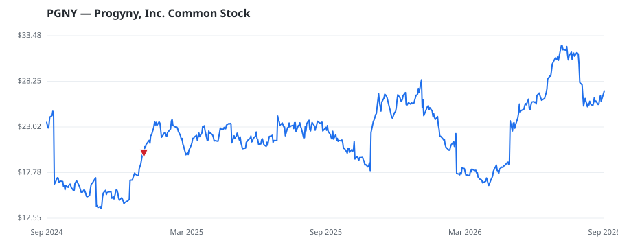

bullish · bearish · n/a — dots: price>SMA10 · SMA10>SMA50 · SMA50>SMA200 · up>down volume (20d)
Health Care Equipment & Services · mid cap

Progyny Inc is a benefits management company specializing in fertility, family building, and women's health benefits solutions. Its clients include employers across various industries. The fertility benefits solution consists of treatment services (Smart Cycles), access to the Progyny network of high-quality fertility specialists that perform the Smart Cycle treatments, and active management of the selective network of high-quality provider clinics. SERVICES-MISC HEALTH & ALLIED SERVICES, NEC · website
| Revenue | $1.3B | Net income | $58.5M |
|---|---|---|---|
| Operating income | $85.3M | Diluted EPS | $0.65 |
| Assets | $742.4M | Equity | $516.0M |